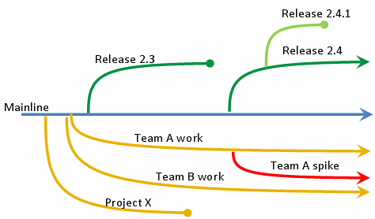
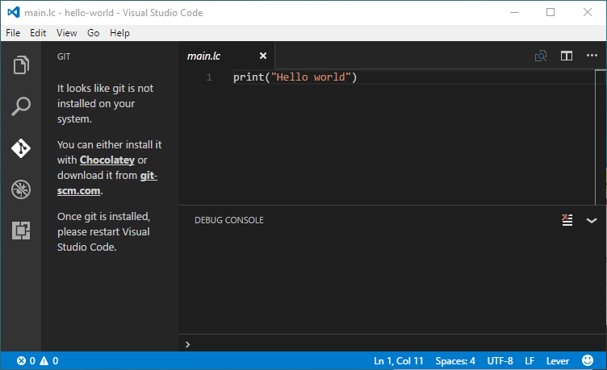
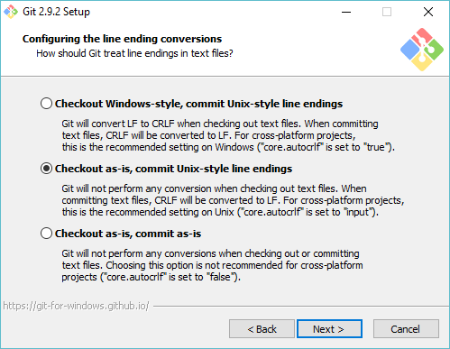
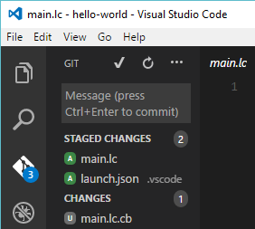
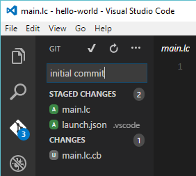
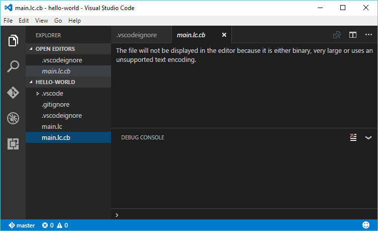
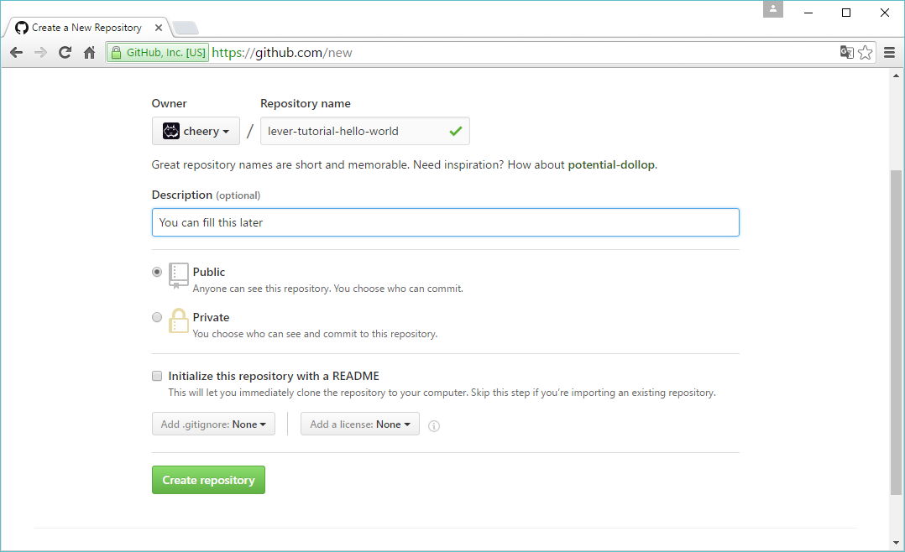
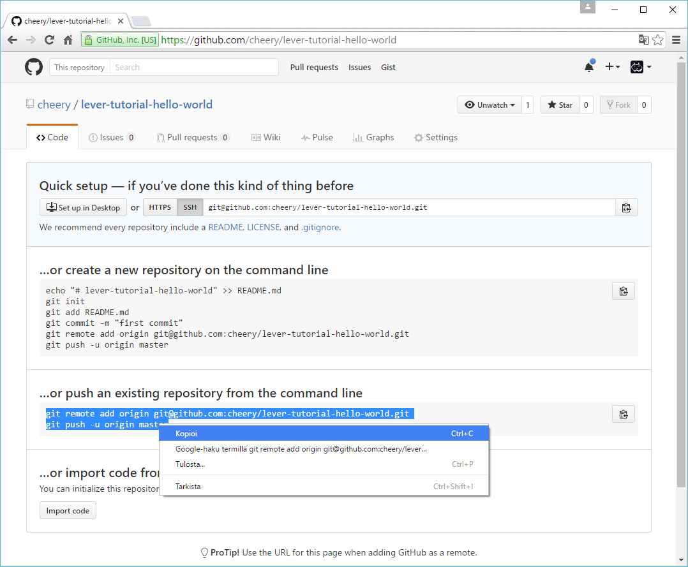
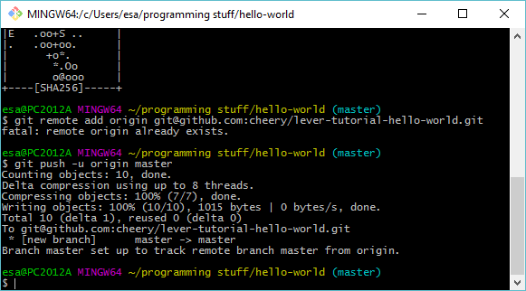
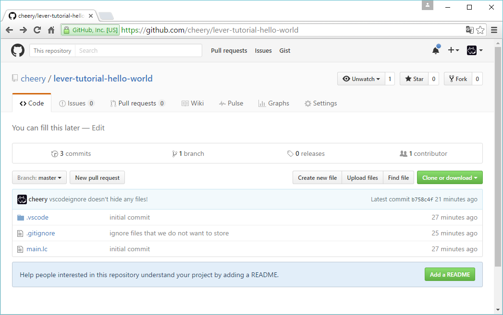

This is one in a series of guides discussing software tools and their use in Lever projects. Working through this guide will provide a basic understanding of git and GitHub as well as a start on the use of VSCODE with Lever.
git is a developer's tool that can be used to manage the source code for your projects. It provides a way to experiment with changes to the code and to track changes once they're finalized.
git is designed to be multi-user. It allows different developers to work on the same project at the same time without getting in each other's way. Developers can contribute fixes to the codebase in general or focus on maintaining different branches, or versions, of the code.

git is one of several competing tools known as Version Control Systems. This particular tool was created by Linus Torvalds, the original developer of Linux. To read more about Version Control Systems, click here.
git can be used as a stand-alone tool on one developer's PC or as a collaborative tool. In the latter case, a codebase lives on a server, which may be a private machine that belongs to a venture or a public git web service.
If you'd like simply to share your source code for others to use, it's easy to create a source tarball and link to it. However, if the goal is to open your project up to collaborative development, presently, git web services are one of the best approaches.
Typically, git web services are free, up to a point, but charge for extra features. There are several services of this type. The best one is generally considered to be GitHub. GitHub is located online at the following link:
Correct the following as necessary:
This guide outlines the setup of git under Windows and illustrates basic workflows for git both as a stand-alone tool and in conjunction with GitHub.
As a sample project, we'll use a VSCODE component written in Lever.
The focus is Windows as VSCODE is highly Windows-specific. Separate guides may be added for Linux Lever projects in the future.
If you work through this guide, you should be comfortable with git for Windows at the end and, additionally, you'll pick up a bit related to working with VSCODE and the Lever codebase.
Please work through the following guide first:
How to get started with vscode.
If you read through the getting started with vscode -guide You created a hello-world folder. Open that folder with the 'File' -menu. If someone has deleted that directory, it's okay. Just create a new directory and put something there. But open a directory anyway, it will become a git repository in this guide.
In the left tab you've got this diamond shaped symbol, when you press it tells you 'git' is not installed.

The next step is to install Git for Windows, if you don't already have it.
If you click at the 'git-scm.com' -link, it starts to download git. Let it finish and run the installer. Then step through until you hit a following dialog.
Earlier dialogs have lot of options, they seem to be right from the start, and it's okay for you to change them if you know something about what each means. One thing is that you probably want to keep the "Git Bash Here" and "Git GUI Here" installed. They are both very useful.
In this dialog you are best off by checking 'Checkout as-is, commit as-is' here.

There are lot of programming terms such as 'checkout' or 'commit' here. So, it may look a bit chaotic.
This part is optional.
The line-ending issue is historical. To read more about it, click here.
In short, many early computers fed text directly from the memory to a teletype printer head that printed characters to paper. CR is a control character that made the print head to switch to a new line.
Because the print head was not fast enough, it did not manage to finish the operation in time and you would often see the next letter get printed to a middle of page. To avoid this, text files ended up with CR+LF sequence, with the LF doing nothing. This gave the print head enough time to return.
Hardware drivers eventually ended up to abstract away the details, and computers were free to use a single character as newline. Unix adopted the LF as a newline, while Windows kept using CR+LF as a newline.
The problem here is that Git is very sensitive for line feed characters. If the line feed convention changes along the way, it renders the Git diff useless. There are some places where you still see CR+LF used, but they appear in protocols and such, not in text files. The standard we use with Lever files is to just use LF everywhere.
We recommend 'Checkout as-is' because this means you get a repository directory that is safe to move from a computer to an another without committing it through Git. You have an editor, that if you put like I proposed is configured to use LF everywhere. Also the VSCode doesn't force the file encoding so you shouldn't have problem with editing text files using any of the above settings.
Once you have a git installed, you can create a git repository in VSCode!
I'll pause here and suggest the following changes: Add step numbers to organize things a bit more. Possibly add step titles to the step numbers.
I assume that the flow is as follows: You install Git for Windows, the hello-world project is added to git, you create a repo on the GitHub side, and then you make changes and commit. Is it something like this? Make the flow clearer to the casual reader.
If Git Bash is part of this, should probably add a paragraph or two explaining more about what it is and linking to a Git Bash tutorial.
There are images further down that need more context. The casual reader will like to understand what is going on, not just execute steps exactly.
Now you have a git repository and the git tab is active. It's showing up the changes that haven't been committed to the repository.
Git created a directory for you that has a history. Every git directory has a history that is stored in '.git' -folder. It is possible to checkout a from any point in this history and see how the directory looked back then. For example, here's the directory tree of a first commit to lever repository. It looked like that in October 29, 2014!
This is very useful feature for managing your projects.
The chances are transferred into history in stagings, multiple files at once. Every stage gets a message that should tell what was done.
Lets make the first commit. There is very clear plus -sign that appears next to a file in that list. Press it to stage a file.
The staged changes appear into their separate list. We leave the main.lc.cb away because that's a binary file that Lever compiles from main.lc before it runs it.
To commit something you need a message, but this is the very first commit so we can give it a message 'initial commit'.
 BOINK! Git hits you to the head! You lose 5 sanity points!!
To avoid this, open the GIT Bash to get this kind of very discomforting black screen you've probably seen in hacking movies. Type the commands such as in the screenshot, but replace 'cheery' with user name of your own, and the email address with your own. These lines tag and identify the code you wrote.
I'm not sure, but the name perhaps must be the same you use with your upcoming github account. You can change it later with this very same way.
Now you should be able to commit!
Generally you do not want to commit everything into your repository, you absolutely do not want to commit things other people shouldn't see such as your passwords or customized server configs. You also don't want to commit most binaries or files that get generated when you run your program.
If you've run a program with lever, you got one right there named 'main.lc.cb'. To ignore all files with lever bytecode file extension, add the following line '*.lc.cb' to new file '.gitignore'
I also made '.vscodeignore', because I thought it would ignore files in vscode -view. Turns out I was wrong.
Prefer to describe what you do in the commit message. It is common to see very bad commit messages and it is understandable because naming can be hard. But you will get better every time you try. Eventually it will become your second nature to write meaningful commit messages.
When something becomes useless later on, you can delete it from the tree and stage a commit to delete it.
Notice that this does not delete a file from the history. So if you commit a file you should have not commit, often the easiest way to truly remove it is to destroy the whole repository. There are some gentler, but very much more challenging ways to remove files. Best way to avoid this is to not do that error in the first place.
If you can invalidate the information the file contains, it's usually better way than to change a git repository.
If the file isn't very dangerous, the best way is to let it stay in the history. It's the job of git to handle the history. Let it do its job.
So.. We gits have a hub these days. We call it Github!
The following sequences shows out how to create a public repository where you can push changes from your local repository.
There's a very little button in the upper right corner of the site...
...And it opens up like this. The best results are gained by names that tell something important about your work. For example 'nike' is a goddess of victory. A fine name for sports clothing. Do the same trick and you'll be walking along the titans.
Remember to keep the next page open.
So there's no much use of this if you can't push your changes from your repository to the github repository. To use the above lines you need to open a Git Bash to your repository.
If github is new SSH destination to you, you see this kind of message. Just type 'yes' as answer and press return.
BOINK! Github hits you to the head! Well no. Actually it just denies your access to the repository because it cannot know it is yours. You need to authenticate.
Public-key authentification.. Safer than any other authentification method as long as people do not snuff or see your private key. If it's not your personal computer that is safe from snoopys, remember to invalidate the key at github's end afterwards.
The program prints out fancy things such as a fingerprint and ASCII art. They aren't very interesting. Check out the path it points out. Open the whole directory in your VSCode.
The 'id_rsa' is a private key. People who have this key can identify as you. And you can identify as someone whose key you have.
The 'known_hosts' probably contain the github now because you said 'yes' to an important question. It's OK. Just good to know where those things go.
The 'id_rsa.pub' is your public key. Copy it from your file!
Go to https://github.com/settings/keys in your browser and press 'New SSH Key', paste your public key and name it something that identifies the computer you have. I put 'esa computer' there because I am on his computer. Notice the button 'Delete' - that lets you invalidate your key any time.
Next when you try the same thing as again, it lets you do it. Below you see the outcome.
After a while also your VSCode recognizes this. You can notice you will be able to 'Sync', 'Pull' and 'Push' from the menu aside the 'do a barrel roll!' -button.
I made a commit on the github website so I could pull. You see the '1' and a downarrow in the status bar aside the words 'master'. This means that you're in a master branch, and the 'remote' or github repository is 1 commit ahead of yours master branch.

Doing the pull changes the markings, like this.
So, is this worth all the effort? Might be the first thing you ask when you get accomodated to version control of any kind. I use it because it enables incredibly rapid collaboration and allows everyone to grab a development version and contribute.
I have no brightest idea how it could benefit you. But you would be able of writing guides such as this, or sample programs. Or then improve and document the existing sample programs and guides using git & github.
Signing in to github also enables you to submit issues to lever repository, allowing the community to react on what you feel you think needs work.
Also it's weird but knowing how to use git&github allows you to contribute to lots of things. For example there's this guy who wrote a kernel. Say you wanted to contribute to such projects somehow, maybe fix something there for yourself. You could press the 'fork' button to get a clone of this repository to github where you can commit your own changes. Then you could make a 'new pull request' to the original maintainer and he can decide whether to pull your changes or not.
If he doesn't like your changes and rejects them, you could keep your fork and still use it yourself, as long as you follow the license rules. It's even optional to keep it in sync with the mainline and update it from time to time, though you may want to stay updated for your sake if you fork a kernel.
If want to write closed source code, you could ignore github or then use their private repositories -feature that costs a little bit. Overall using git is still useful even if you didn't intend to put anything online.
There's lot ways to operate on git repositories using Git Bash. But they're out scope of what I should teach to you. This is here because I think it's something every programmer should know how to do.
The guide coming after this one will explain how to compile Lever on windows 10. It's something skilled programmers want to do, because Lever can miss a feature or two they want, even if that feature was otherwise trivial to implement.